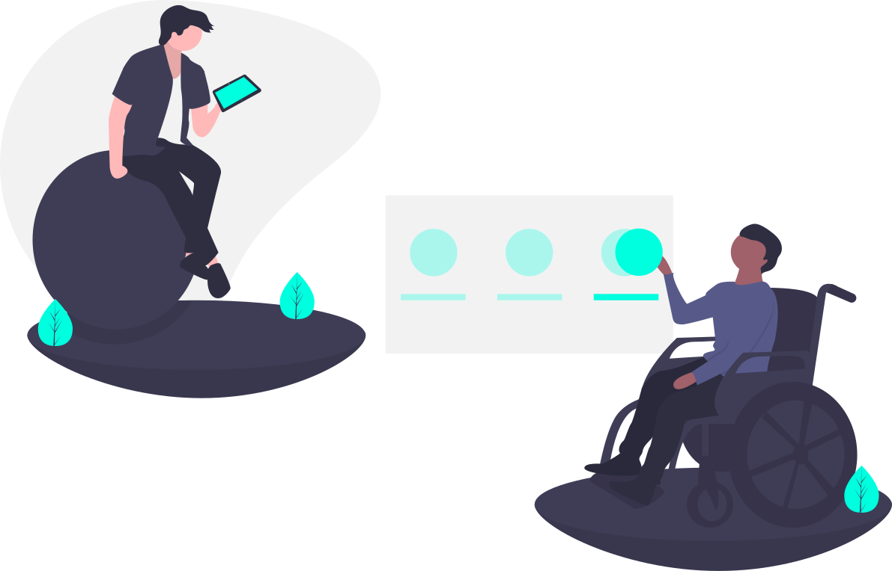

Sobre
Sabendo-se que 6,2% da população brasileira possui algum tipo de deficiência
seja ela auditiva, visual, motora ou intelectual. O projeto Anjos da Doação
busca promover a cultura da solidariedade, tendo como objetivo principal a
melhoria da acessibilidade dos aparelhos de locomobilidade e a inclusão social.

Como Funciona

O Anjos da Doação funcionará através de um site e vários pontos de coleta,
nos pontos de coleta será possível que pessoas cadastradas no Anjos da
Doação possam doar ou adquirir órteses e próteses, as informações de onde
ficam os pontos de coleta e os apetrechos que estarão nele serão acessadas
no site.
Quem Somos
Anjos da Doação é uma rede colaborativa que possibilita
a
doação,
troca
ou
empréstimo de
próteses ou órteses para pessoas com os mais variados tipos de deficiência,
tendo o intuito de permitir que pessoas de baixa renda possam ter acesso a
esses apetrechos de forma gratuita e permitindo a pessoas que tenham um
maior poder aquisitivo realizar doações de novos produtos em
estabelecimentos parceiros da plataforma